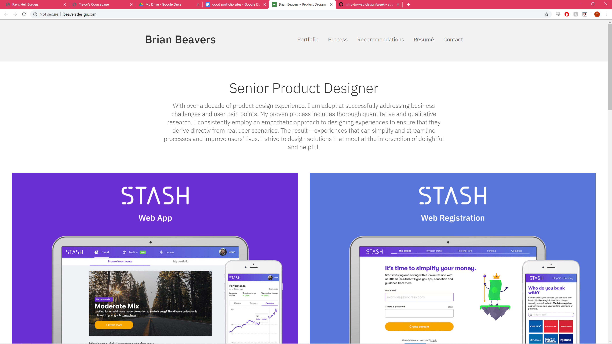

https://quickhitrecord.media
https://quickhitrecord.media
I think the design aesthetic of the site and very appealing and fitting for the type of content on the site. The choice to have some videos showing off his work is very smart and helps get right to the point on what makes him special. He has a quote from a coworker like the back of the box quote on why to hire him and I think it would have been better to put that at the top right under the nav. Also, I think it would have been smart to include the work he is most known for and most recognized for to make it easier for someone to see it and be like,”oh he did that?!.”
 http://www.beaversdesign.comVery minimal and stylized to go for a very modern feel to the site. I wish the different images where smaller so that I could see multiple at once and it just makes the page need to download larger images which can make loading the page harder for some people with slower speeds. I really like that he has a process page that explains his thought process and workflow to see if he would be a good fit for a prospecting employer. Also, making his resume in the nav makes it easy to find since it is a super important thing for a lot of people.
 https://www.khoibphan.com
https://www.khoibphan.com
Largely picture based but that helps draw your attention to all the great things he has helped work on in the past. The nav buttons are rather small and tucked away which I find a bit odd and I definitely think that they should be made more center and larger font size because it can make them rather hard to notice at first glance at the site. Also, I think he should have put his name somewhere at the top of the page as well so that people know who the person they are looking at. The font choice of some of the headers is a bit odd, they look stylish but they just kinda stick out like a sore thumb compared to the otherwise normal sans serif fonts.
 https://www.christammar.com
https://www.christammar.com
A very sleek and minimal design that is very appealing to the eye but I do think that it could be improved on some aspects as well. First off the very aligned and structured format of the website is very organized and appealing to look at and makes it much easier to use as well. The logo is very minimal and aesthetically pleasing and really lends itself to the style of the rest of the site. One big issue is that he shows his work off on the front page but I don’t know what his actual role is, is he a software designer, a web designer, a marketer, it just seems like that should be something right in the forefront of his portfolio. Also the nav only has two options which kinda bloats the two with a lot of different paths to go so it could use more nav options to help break up the information.
https://www.christammar.com
A very sleek and minimal design that is very appealing to the eye but I do think that it could be improved on some aspects as well. First off the very aligned and structured format of the website is very organized and appealing to look at and makes it much easier to use as well. The logo is very minimal and aesthetically pleasing and really lends itself to the style of the rest of the site. One big issue is that he shows his work off on the front page but I don’t know what his actual role is, is he a software designer, a web designer, a marketer, it just seems like that should be something right in the forefront of his portfolio. Also the nav only has two options which kinda bloats the two with a lot of different paths to go so it could use more nav options to help break up the information.
 https://www.1monkeyarmy.com
https://www.1monkeyarmy.com
I mostly picked this site because he is a game designer like I want to be so it's interesting to see how he shows off his work since games can be hard to show on a portfolio. It definitely isn’t as professional looking as some of the others but I think it has a handmade kind of charm to it like you can tell he made the site himself. Some issues I have with the site are that I wish the different works on the front page were more evenly spread out. Also, the logo has a bit of a background that isn't the same color as the rest of the background which just looks unprofessional. Finally the site’s name “1monkeyarmy” seems rather random and I think he should change it to his name or something more obvious as to what the site is.